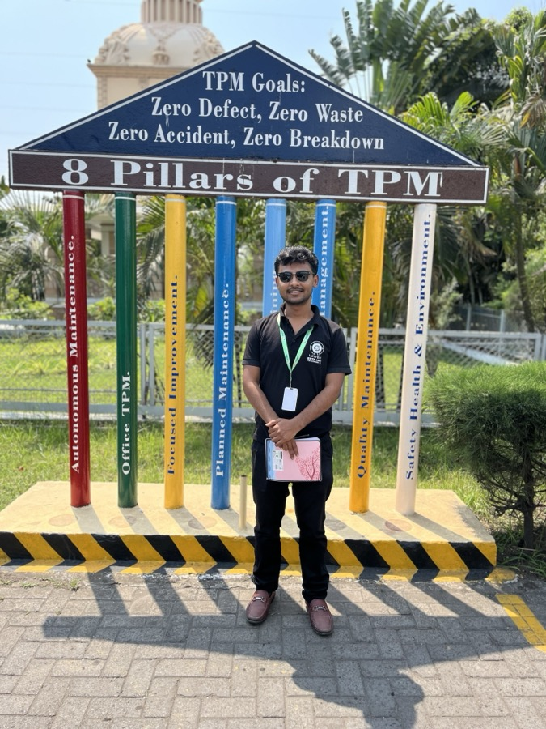
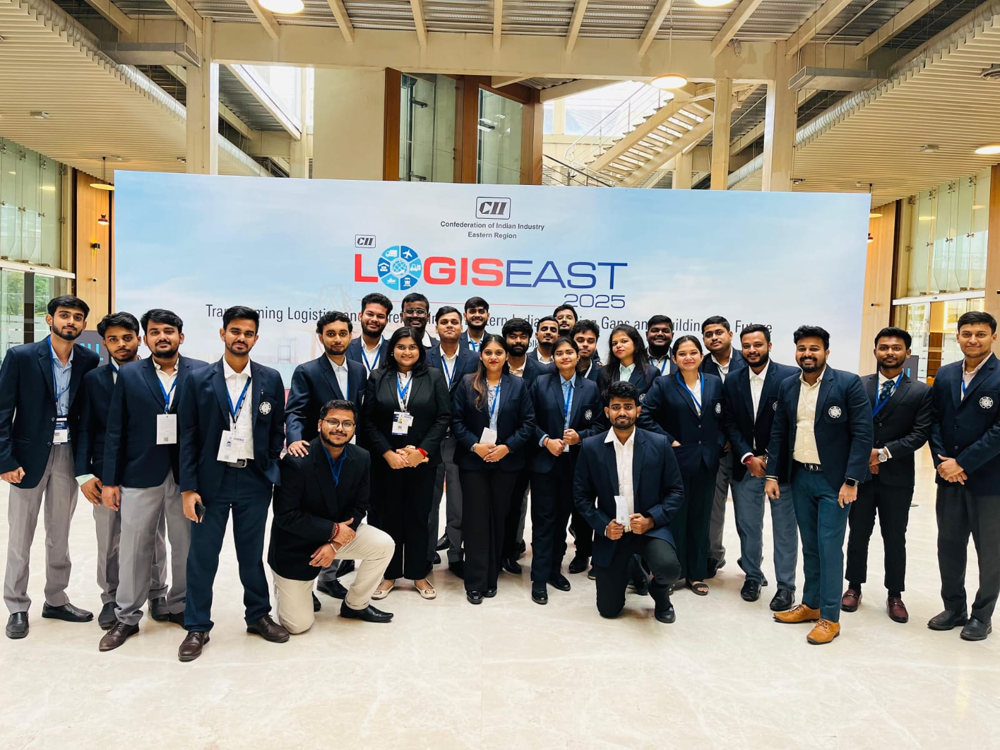

From Burdwan to boardrooms — turning ground-level supply chain chaos into operational clarity with data, grit, and purpose.
I'm Abhijit Ghosh, a Supply Chain professional from West Bengal currently working as a Management Trainee — SCM at Neo Metaliks Limited. I started my academic journey with a BBA in Marketing from the University of Burdwan, which gave me a strong foundation in business and consumer dynamics.
I then levelled up with an MBA in Transportation & Logistics from IISWBM, Kolkata (2024–2026) — diving deep into supply chain strategy, operations research, procurement, and logistics optimisation. During my MBA, I completed my internship at Emami Agrotech Limited (March–May 2026) — conducting a comprehensive COPQ (Cost of Poor Quality) study across their distribution network, quantifying ₹10.03 crores in annual quality failures across their Haldia plant and pan-India CFA network.
I also co-founded Janani Ghee (2021–23) — a homemade ghee brand where I ran end-to-end logistics, procurement, and distribution across 10+ retail outlets and 200+ customers, cutting delivery lead times by 25%. I love combining ground-level operations thinking with AI tools to make supply chains leaner, faster, and smarter.
Neo Metaliks Limited · West Bengal
Working as a Management Trainee in the Supply Chain division of Neo Metaliks — a steel manufacturing company producing TMT bars and wire rods. Involved in inbound raw material procurement (sponge iron, scrap, ferro-alloys), vendor coordination, logistics tracking, and building supply chain reporting frameworks to drive cost efficiency.
Emami Agrotech Limited · Haldia Plant (M251) & Dhulagarh CFA, Kolkata (D257)
Dissertation internship under Mr. Debanjan Chakravarti (Manager – CS&L). Conducted a comprehensive COPQ study across Emami's distribution network — analysed 5,167 SRN lines worth ₹773.38 lakhs, quantified ₹10.03 crores annual COPQ, and delivered 14 interventions with ₹4.5–6 crore first-year saving potential. Also designed the SAMA SRN portal to digitise the sales return and credit note approval workflow.
IISWBM (Institute of Management Studies) · Kolkata
Pursuing MBA with specialisation in Transportation & Logistics at one of India's oldest management institutes. Coursework spans operations research, logistics strategy, procurement, quality management, and business analytics. Active in case competitions and industry interaction programmes.
Dr Soma Singha · Homeopathic Clinic
Managed inventory of 200+ homeopathic products — ensuring accurate stock tracking, timely replenishment, and zero stockout incidents. This was my first hands-on experience with real inventory management outside the classroom.
Janani Ghee · Entrepreneurial Venture · West Bengal
Co-founded and ran a homemade ghee brand from scratch. Managed end-to-end supply chain — sourcing raw materials, coordinating production with 12 housewives, and building a distribution network across 10+ retail outlets and 200+ direct customers. Reduced delivery lead times by 25% through demand forecasting and route optimisation.
Cyber Research & Training Institute, Burdwan · Burdwan University · 75%
Bachelor of Business Administration with a focus on Marketing Management. Built foundational knowledge in business strategy, consumer behaviour, market research, brand management, and sales operations — skills that now help me communicate supply chain value clearly to business stakeholders.


A comprehensive COPQ map across Emami's distribution network — ₹10.03 cr annual waste quantified across 15 depots. 5,167 SRN lines, SAP data analysis, 14 interventions with ₹4.5–6 cr saving potential.
Interactive browser-based expiry tracking tool for depot inventory management with real-time freshness visibility and FEFO alert system.
Management Trainee in SCM at Neo Metaliks — steel manufacturing. Inbound procurement, vendor coordination, logistics tracking, and cost-reduction frameworks.
Built a Sales Return & Approval (SRN) portal at Emami Agrotech — digitising the credit note issuance process, cutting approval cycle time and eliminating manual paperwork.
Structured, AI-assisted knowledge base for IISWBM Transportation & Logistics examinations across 8 subjects — shared with batchmates.
Co-founded a homemade ghee brand — ran procurement, production coordination with 12 housewives, logistics & distribution to 200+ customers.
Designed and built this entire portfolio using Claude AI — from layout design to custom chatbot, animations, and productivity tools.
Beyond supply chain — I help individuals & businesses put AI to work, build their web presence, and learn to automate the boring stuff.
I automate repetitive tasks and workflows using the best AI tools — Claude Code, OpenAI Codex, and ChatGPT. Reports, data cleanup, document generation, MIS, email drafting — if it's repetitive, it can be automated.
Need a portfolio, business landing page, or a custom tool online? I design, build, and host websites end-to-end — fast, responsive, animated, and live on your own domain. (This very site is an example!)
One-on-one or group sessions on how to use AI and how to automate your tasks — practical, hands-on, and tailored to your work. Walk away able to save hours every week with the right AI workflow.
Fill this in and I'll get back to you over email.
Open to conversations about supply chain, logistics, and operations roles.